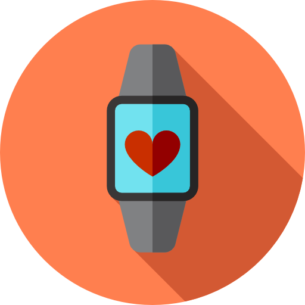

<ion-header>
    <ion-toolbar>
      <ion-title>Pair Wearable Device</ion-title>
      <ion-buttons slot="start">
        <ion-back-button routerLink="/user/profile" routerDirection="back"></ion-back-button>
      </ion-buttons>
    </ion-toolbar>
  </ion-header>
  
  <ion-content style="--background: linear-gradient(to top, #ffffff, #f4f4f6, #e8e9ee, #dbdfe5, #cdd5dc);">
  
      <ion-card class="carousel-card" style="background-color: #d35933; padding: 30px;">
        <div class="loading-screen" *ngIf="loading"></div>
        
      </ion-card>

      <ion-card class="carousel-card" style="background-color: white; text-align: center; font-size: 120%; color: black; padding: 30px;">
          Please open the wearable application and, when prompted, insert the following unique PIN code alongside with your username
        <br>
          <div style="font-size: 200%; font-weight: bold; margin-top: 1vh;">{{ pinWatch }}</div>

      </ion-card>
  
  </ion-content>